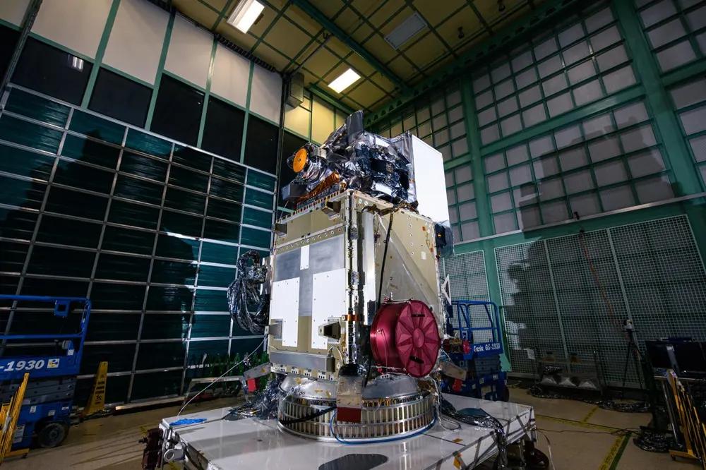
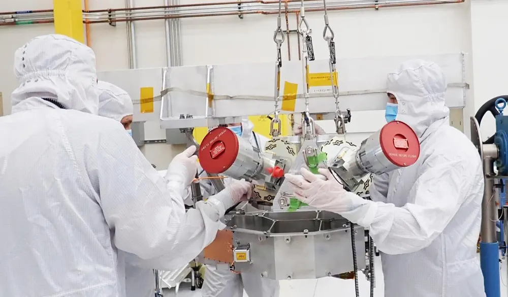
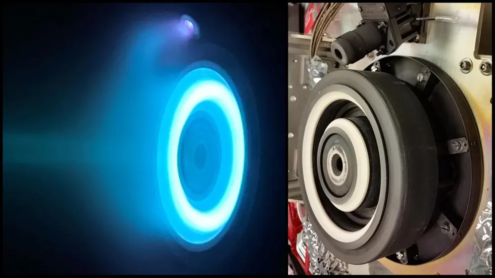
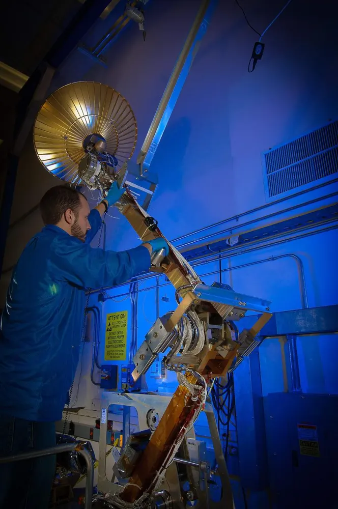
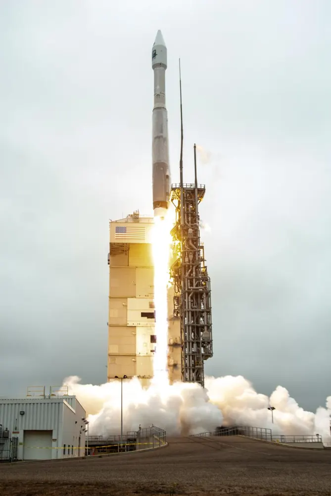

סייר לוויינים אינטראקטיבי: גררו את חלקי הלוויין למקומם, ואז למדו על תקשורת לייזר ומחשוב במסלול, מגן ועד אוניברסיטה.
NASA/JPL-Caltech
בנו לוויין! גררו כל חלק למקומו (או הקישו על חלק ואז על מקומו). אחר כך בחרו רמה, מ"וואו" לגן–כיתה ב' ועד פרטים ברמת אוניברסיטה.
נסו מקום אחר!יפה!בניתם לוויין! קראו על כל חלק למטה.עכשיו הקישו על מקומו בלוויין:בחרו קודם חלק.שחררו אותו על מקום מקווקו.הלוויין נוקה. מוכנים לבנות שוב!בנו את הלוויין שלכם, ואז לחצו על שיגור!הלוויין שלכם בנוי. מוכן לשיגור!3…2…1…המראה! מנועי הרקטה שואגים.מטפסים דרך האוויר הסמיך. השמיים מחשיכים.הפרדת שלבים! השלב הראשון הריק נופל.היפרדות החרטום: חרטום החרוט נפתח והלוויין שלכם רואה את החלל.החדרה למסלול! הלוויין שלכם מקיף את כדור הארץ.מערכים סולאריים נפתחים כדי לתפוס אור שמש.אנטנה נפרסת כדי לדבר עם כדור הארץ.המשימה מוכנה: הלוויין שלכם עובד במסלול!השיגור הושלם: המראה, הפרדת שלבים, היפרדות החרטום, החדרה למסלול, פריסת מערכים סולאריים ואנטנה.יוםלילהLEOMEOGEOהמסלול שלכםלא בקנה מידה; הזמן מואץחץ אדום: הכבידה מושכת לכיוון כדור הארץגובהמהירותזמן מחזורkmkm/sדק'hרדיולייזרהעברה לתחנת הקרקע הבאהענן חוסם את הלייזרמהירויות להמחשה, לא בקנה מידהשבב SIברורה: נשלחה הביתהמעוננת: נמחקהמים שצורכים מרכזי נתונים בארה"ב (LBNL)כ-21 מיליארד ליטרכ-66 מיליארד ליטרבמסלול: חום מוקרן לחללבלי מי קירורהשהיית אנימציותהפעלת אנימציותגררו כדי לסובב את הלוויין, צבטו כדי להגדיל. נסו פירוק, בנייה בתלת-ממד או שיגור!החלקים מרחפים! הקישו על תווית זוהרת כדי להצמיד כל חלק למקומו.{p} הוצמד!הלוויין הושלם! לחצו על שיגור כדי לשלוח אותו לחלל.{p}: ראו את תמונת החומרה האמיתית למטה.תצוגה מפורקת: כל חלק מופרד כדי שתוכלו לראות פנימה.כל החלקים חזרו למקומם.זה המודל התלת-ממדי האמיתי של NASA של Landsat 8. גררו כדי להסתכל עליו מכל הצדדים.טוען את המודל התלת-ממדי של NASA…מצטערים, לא ניתן היה לטעון את המודל התלת-ממדי.קישור לייזר! אור ירוק נושא נתונים למטה לתחנת קרקע.היפרדות החללית! הלוויין שלכם טס חופשי.מרכבגלגלי תגובהמטעןמגששי כוכביםמנוע דחיפהאנטנהמערכים סולאריים
חלקי הלוויין
מעבדת לוויין בתלת-ממד
סובבו אותו, פרקו אותו, בנו אותו, שגרו אותו!
סובבו את הלוויין בתלת-ממד, פתחו את התצוגה המפורקת כדי לראות את גלגלי התגובה החבויים בפנים, ואז שגרו אותו: צפו במאיץ נופל, בחרטום נפתח ובמערכים הסולאריים נפרסים במסלול.
תצוגה מפורקת ורצף משימה מלא: הפרדת שלבים, השלכת חרטום, היפרדות החללית, פריסת מערכים ואנטנה, ואז שידור אופטי לקרקע. כדור הארץ משתמש במפות Blue Marble ו-Black Marble של NASA, מואר על ידי השמש כדי שתראו את צד היום וצד הלילה.
מעבדת התלת-ממד דורשת WebGL. הבונה הדו-ממדי למעלה והתמונות למטה עובדים בכל מקום.
לחצו על שיגור וצפו בלוויין שלכם רוכב על רקטה לחלל!
צפו בשיגור, ואז השוו שלושה גובהי מסלול. מסלול נמוך סביב כדור הארץ (LEO) מקיף את כדור הארץ בכשעה וחצי, לווייני GPS במסלול בינוני (MEO) צריכים כ-12 שעות, ולוויינים גאוסטציונריים (GEO) צריכים יום שלם, כך שהם נראים מרחפים מעל נקודה אחת.
הזיזו את מחוון הגובה. הדף מחשב בזמן אמת את מהירות המסלול המעגלי v = √(μ/a) ואת זמן המחזור לפי החוק השלישי של קפלר, T = 2π√(a³/μ), עם μ = 398,600 ק"מ³/ש² ורדיוס כדור הארץ 6,371 ק"מ. החץ הירוק הוא המהירות, תמיד לאורך המסלול; החץ האדום הוא הכבידה, תמיד לכיוון מרכז כדור הארץ.
נוצר על ידי SI ושותף SI ביולוגי
הערת תקציב קישור: העוצמה הנקלטת יורדת עם ריבוע המרחק, ולכן קישור GEO (כ-36,000 ק"מ) חלש בערך פי 8,000 מקישור LEO בגובה 400 ק"מ באותה עוצמה, אנטנות ותדר. לכן לווייני GEO משתמשים בצלחות גדולות ובעוצמה גבוהה.
Landsat 9 לפני השיגור: המרכב נושא את כל שאר החלקים. קרדיט: NASA/Randy Beaudoin
המרכב הוא הגוף של הלוויין. הוא מחזיק הכול יחד, כמו תיק גב שנושא את כל הכלים.
המרכב נותן ללוויין את המבנה שלו, מחלק חשמל, שומר על החלקים בטמפרטורות בטוחות, מפעיל את המחשב שעל הסיפון וקובע לאן הלוויין מכוון. מהנדסים משתמשים לעיתים קרובות באותו תכנון מרכב למשימות רבות ושונות.
תת-מערכות המרכב: מבנה, אספקת חשמל, בקרה תרמית, פיקוד וטיפול בנתונים, קביעת כיוון ובקרה, ותקשורת. המתכננים מאזנים את תקציבי המסה, ההספק והנפח מול צורכי המטען.
🔭 מטען

Ocean Color Instrument, המטען העיקרי של PACE, בזמן ההתקנה. קרדיט: NASA/Denny Henry
המטען הוא כלי העבודה של הלוויין, כמו מצלמה שמצלמת יערות מהחלל!
המטען הוא הסיבה שהלוויין קיים: מצלמות, מכ"ם או מכשירים שמודדים אוויר, קרח, יערות או אוקיינוסים. כל השאר על הסיפון נמצא שם כדי לעזור למטען לעשות את עבודתו.
דרישות המטען (רזולוציה, פסי ספקטרום, זמן חזרה, נפח נתונים) מכתיבות את בחירת המסלול ואת גודל מערכות ההספק, הכיוון והשידור לקרקע. מטעני מכ"ם צריכים אנטנות גדולות והספק גבוה; מטענים אופטיים צריכים כיוון יציב מאוד.
🧭 חיישני כיוון

מגששי כוכבים ל-Europa Clipper: מצלמות שמנווטות לפי הכוכבים. קרדיט: NASA/JPL-Caltech
לוויינים משתמשים במצלמות כוכבים כדי לראות לאן הם מכוונים, כמו מלחים שמשתמשים בכוכבים כדי למצוא את דרכם.
מגששי כוכבים, חיישני שמש וג'ירוסקופים אומרים ללוויין לאן הוא פונה. מקלט GPS אומר לו איפה הוא נמצא במסלול.
קביעת הכיוון ממזגת נתונים ממגשש כוכבים, מג'ירוסקופ, מחיישן שמש וממגנטומטר, לעיתים קרובות עם מסנן קלמן. גלגלי תגובה, מגנטו-טורקרים או מנועי דחיפה מסובבים אז את החללית כדי לשמור על המכשירים והאנטנות מכוונים למטרה.
הפאנלים הסולאריים הם ארוחת הצהריים של הלוויין. הם הופכים אור שמש לחשמל!
מערכים סולאריים הופכים אור שמש לחשמל, וסוללות אוגרות חלק ממנו לזמן שבו הלוויין עובר בצל של כדור הארץ.
קביעת גודל המערך מביאה בחשבון את הזמן שבצל, את יעילות התאים, את זווית השמש ואת הירידה האיטית בתפוקה בגלל קרינה לאורך המשימה. לוויינים משתמשים לרוב בתאים רב-צומתיים, שממירים יותר אור שמש למטר מרובע מאשר פאנלים רגילים על גגות.
🔥 הנעה

מנוע הול חשמלי כמו אלה שעל Psyche של NASA, מופעל בתא ניסוי. קרדיט: NASA/JPL-Caltech
מנועי רקטה קטנים נותנים דחיפות עדינות כדי שהלוויין יישאר במקום הנכון.
מנועי דחיפה מעלים או מכווננים את המסלול ועוזרים להתחמק מפסולת חלל. בסוף המשימה הם יכולים לדחוף את הלוויין למטה כדי שיישרף, כך שלא יהפוך לפסולת.
מנועים כימיים נותנים דחף גבוה; מנועים חשמליים (יונים או אפקט הול) משתמשים בהרבה פחות דלק אבל דוחפים בעדינות לאורך זמן רב. תכנון סילוק בסוף חיי המשימה הוא חלק מקיימות בחלל, כמו ב- Zero Debris Charter.
📡 אנטנות

מערכת האנטנה בעלת ההגבר הגבוה של לוויין מדידת הגשם GPM בבדיקות. קרדיט: NASA
אנטנות מאפשרות ללוויין לדבר עם כדור הארץ ולשלוח תמונות הביתה דרך האוויר!
אנטנות משדרות נתונים למטה ומקבלות פקודות. תחנות קרקע ברחבי העולם קולטות את האותות כשהלוויין עובר מעליהן.
תקציבי קישור מאזנים בין עוצמת המשדר, הגבר האנטנה, מרחק, תדר ורעש. ספקטרום הרדיו מוגבל ודורש רישוי, אחת הסיבות שמשימות פונות לקישורי לייזר ולעיבוד נתונים על הסיפון.
גלגלים מסתובבים בתוך הלוויין עוזרים לו להסתובב, כמו מחליקה אמנותית שמקרבת את הידיים!
גלגלי תגובה הם גלגלים כבדים שמסובבים מנועים חשמליים. כשגלגל מאיץ לכיוון אחד, הלוויין מסתובב לכיוון השני, בלי צורך בדלק.
גלגלי תגובה מחליפים תנע זוויתי עם גוף החללית. מומנטים חיצוניים (מלחץ אור השמש, מגרדיאנט כבידה ומגרר) מרווים בהדרגה את הגלגלים, ולכן מגנטו-טורקרים או מנועי דחיפה "פורקים" מדי פעם את התנע האגור.
המאיץ הוא החלק התחתון הענק של הרקטה. הוא דוחף הכי חזק כדי להרים הכול מהקרקע.
השלב הראשון נושא את רוב הדלק ובוער בדקות הראשונות. כשהוא מתרוקן הוא נופל, כך ששאר הרקטה קלה יותר.
הפרדת שלבים משפרת ביצועים כי כל שלב משליך מסה מתה. משוואת הרקטה, Δv = vₑ ln(m₀/m_f), מראה למה השלכת מכלים ריקים מאפשרת לשלב העליון להגיע למהירות מסלולית.
החרטום הוא חרוט האף של הרקטה. הוא מגן על הלוויין כמו קליפת ביצה עד שהוא מגיע לחלל.
החרטום מגן על הלוויין מפני אוויר, חום וטלטולים במהלך הטיפוס. כשהרקטה נמצאת מעל רוב האטמוספרה, שני החצאים נפרדים ונופלים.
השלכת החרטום מתוזמנת לאחר שהחימום האווירודינמי יורד מתחת לגבול בטוח. הסביבה האקוסטית והתרמית שלו, וגם הקוטר הפנימי של החרטום, מגבילים את גודל החללית ואת האופן שבו המערכים והאנטנות שלה חייבים להתקפל.
🔥 שיגור

Landsat 9 ממריא על רקטת Atlas V, 27 בספטמבר 2021. קרדיט: NASA/Kim Shiflett
תקשורת לייזר: מדברים עם אור
חלק מהלוויינים שולחים הודעות באור לייזר בלתי נראה במקום ברדיו. זה כמו לשלוח ספרייה שלמה הביתה בתוך דקות!
קישורי לייזר (אופטיים) דוחסים מידע לאור אינפרא-אדום. האלומה צרה מאוד, ולכן היא יכולה לשאת הרבה יותר נתונים מרדיו, אבל הלוויין חייב לכוון אותה בדיוק רב, ועננים יכולים לחסום אותה.
קישורי לייזר (אופטיים) דוחסים מידע לאור אינפרא-אדום. האלומה צרה מאוד, ולכן היא יכולה לשאת הרבה יותר נתונים מרדיו, אבל הלוויין חייב לכוון אותה בדיוק רב, ועננים יכולים לחסום אותה.
ב-2023, ה-CubeSat TBIRD של NASA שלח לקרקע 4.8 טרה-בייט של נתונים ללא שגיאות בפחות מחמש דקות בקצב של 200 גיגה-ביט לשנייה, קישור הנתונים המהיר ביותר מלוויין לקרקע שתועד אי פעם.
נוצר על ידי SI ושותף SI ביולוגי
מסופים אופטיים זקוקים לכיוון מדויק ביותר, לתחנות קרקע באתרים עם שמיים בהירים ולפרוטוקולים לשחזור שגיאות (TBIRD השתמש בבקשה אוטומטית לשידור חוזר) כדי לשרוד דעיכה אטמוספרית.
איך זה עוזר לבני אדם ולטבע: שידור מהיר יותר מביא נתוני הצפות, שריפות ויערות לאנשים שזקוקים להם מוקדם יותר.
מחשוב במסלול (SI בחלל)
לחלק מהלוויינים יש מוח SI זעיר שזורק תמונות מעוננות לפני שהוא שולח אותן הביתה!
ב-2020, Φ-sat-1 של ESA הפך ללוויין האירופי הראשון שהריץ על הסיפון מודל SI של למידה עמוקה. הוא מיין תמונות מעוננות מתמונות ברורות, כך שרק תמונות שימושיות נשלחו לקרקע.
על הקרקע, מרכזי נתונים רבים משתמשים במים לקירור. Lawrence Berkeley National Laboratory העריכה שמרכזי נתונים בארה"ב צרכו ישירות כ-66 מיליארד ליטר מים ב-2023 (כ-17 מיליארד גלון), לעומת כ-21 מיליארד ליטר ב-2014.
במסלול, חום פסולת מוקרן לחלל, ולכן מרכז נתונים שם לא יזדקק למי קירור. מחקר ASCEND במימון האיחוד האירופי, בהובלת Thales Alenia Space (2024), מצא שמרכזי נתונים בחלל עשויים להיות ישימים, אבל יפחיתו פליטות פחמן רק אם משגרים יהפכו לפולטים בערך פי עשרה פחות לאורך כל מחזור החיים שלהם.
שיקולים שיש לאזן: הקשחה מפני קרינה, מסה ושטח של רדיאטורים, פליטות שיגור, סיכון לפסולת, תיקון, והעיכוב בשליחת התוצאות למטה. השוואות הוגנות סופרות את כל מחזור החיים, לא רק את מי הקירור.
איך זה עוזר לבני אדם ולטבע: פחות מים נשאבים מנהרות ומאגמים לקירור, ותשובות מהירות יותר מנתוני לוויין.
חומרה אמיתית, שיגורים אמיתיים
הקטעים האלה מגיעים מ-NASA. הכתוביות מופעלות; הקישו על CC כדי לשנות אותן.
Landsat 9 מורם ומוצב על גבי הרקטה שלו קרדיט: NASAשיגור Landsat 9 על רקטת Atlas V קרדיט: NASAלוחות חרטום אמיתיים נפרדים, כפי שנראו ממצלמה על המערך הסולארי של Orion (Artemis I) קרדיט: NASAהחללית Psyche של NASA בודקת את המערכים הסולאריים הענקיים שלה קרדיט: NASA/JPL-Caltech